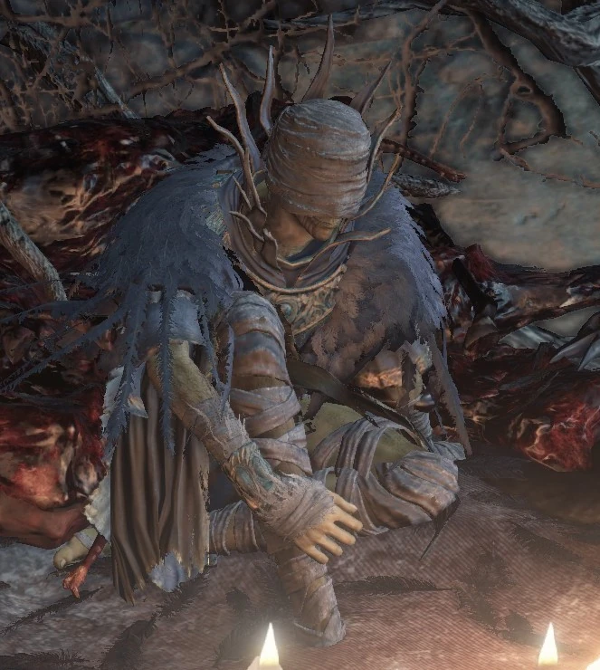

← Volver
← Volver
Cornyx del Gran Pantano es un NPC de Dar Souls III. Cornyx enseña piromancias, actúa como un mercader y mejora tu Llama de Piromancia. Se puede encontrar a Cornyx en el Asentamiento de los No muertos, donde él ofrecerá sus servicios. Se encuentra encerrado en una jaula en lo alto de un edificio custodiado por tres no muertos lanzabombas. Para alcanzarlo, deberás dejarte caer desde el puente de adoquines cerca de la hoguera de la Zona Inferior del Acantilado y ascender a lo alto del edificio donde se encuentra la jaula. Luego de aceptar sus servicios, se reubicará al Santuario del Enlace de Fuego, donde actúa como un mercader.
| Ítems | Variante | Cantidad | Probabilidad | Suerte |
|---|---|---|---|---|
| Llama de Piromancia |
|
1 | 10% | No |
| Venda del Viejo Sabio |
|
1 | 10% | No |
| Atuendo de Cornyx |
|
1 | 10% | No |
| Envoltura de Cornyx |
|
1 | 10% | No |
| Falda de Cornyx |
|
1 | 10% | No |
| Cenizas de Cornyx |
|
1 | 10% | No |
| Ítems disponibles para la venta | Cantidad | Almas | Requerimiento |
|---|---|---|---|
| Bola de Fuego | 1 | 1000 | - |
| Oleada de Fuego | 1 | 1000 | - |
| Gran Combustión | 1 | 3000 | - |
| Sudor Relámpago | 1 | 1500 | - |
| Orbe de Fuego | 1 | 3000 | Tomo de Piromancia del Gran Pantano |
| Bola de Fuego Explosiva | 1 | 5000 | Tomo de Piromancia del Gran Pantano |
| Niebla Venenosa | 1 | 2000 | Tomo de Piromancia del Gran Pantano |
| Sudor Profuso | 1 | 2000 | Tomo de Piromancia del Gran Pantano |
| Oleada de Ácido | 1 | 6000 | Tomo de Piromancia de Carthus |
| Baliza de Carthus | 1 | 8000 | Tomo de Piromancia de Carthus |
| Arco de la Llama de Carthus | 1 | 10000 | Tomo de Piromancia de Carthus |
| Gran Orbe de Fuego del Caos | 1 | 10000 | Tomo de Piromancia de Izalith |
| Tormenta del Caos | 1 | 12000 | Tomo de Piromancia de Izalith |
| Corona de Piromante | 1 | 500 | - |
| Atuendo de Piromante | 1 | 800 | - |
| Envoltura de Piromante | 1 | 500 | - |
| Pantalones de Piromante | 1 | 500 | - |
Diálogo del primer encuentro
"Ajá, ¿estamos desprevenidos? Bienvenido a mi morada. Soy Cornyx, un viejo piromántico. Un cuervo en su jaula, como ves. ¡Pero aquí estamos, un encuentro para la eternidad! He oído que los No Encendidos son excelentes recipientes. ¿Te gustaría aprender piromancias de este anciano?"
Diálogo al pedir aprender piromancias
"Muy sabio. Un encuentro casual no debe desperdiciarse. Para reiterar, soy Cornyx, del Gran Pantano. El placer es mío."
Al negarse a aprender piromancias
"(Risas disimuladas) ¡Qué tontería! Este viejo cuervo tiene algo de conocimiento propio, ¿sabes? Bah. No tiene sentido decírtelo. No te apresuraré. Volverás cuando te ilumines. Al fin y al cabo, ambos somos no muertos. Y ambos prisioneros, cada uno a su manera. (risas disimuladas)"
Segundo encuentro (Santuario del Enlace de Fuego)
"Ah, ahí estás, No Encendido. Quiero expresarte mi gratitud por confiar en un humilde piromante y permitirme contemplar esta llama majestuosa. Como prometí, te impartiré piromancias. Pero primero necesitarás una llama propia (Da Llama de Piromancia). Ten cuidado de no quemarte con ella."
Al seleccionar la opción "hablar"
"Presta atención a mis palabras, No Encendido. Teme al fuego. El hogar de la piromancia, Izalith, fue abrasado por el mismo fuego que creó. Sin duda, era una llama del caos, enredada por la mano de una bruja. Pero ¿quién puede decir que la llama de esta Hoguera sea diferente?"
Al entregarle el Tomo de Piromancia de Carthus
"Vaya, vaya... nunca había visto nada igual. Esta inscripción... este tomo es de las Catacumbas. Fascinante. En este día, el maestro aprende junto al alumno. (risas)"
Al entregarle el Tomo de Piromancia de Izalith
"¡Ah, qué tenemos aquí! ¡Un tomo de piromancia de Izalith! Entonces has encontrado el hogar de la piromancia. ¡Genial! Nunca volveré a maldecir mi vejez y mi no-muerte. ¡Vamos, vamos, muéstralo aquí, rápido! Canalicémoslos juntos. ¡Las piromancias primigenias que solo conocía el viejo Maestro Salaman!"
Al entregarle el Tomo de Piromancia de Quelana
"¡Ah, qué tenemos aquí!... ¡ Por los dioses! Esta inscripción dice: Quelana, la antigua deidad, una de las brujas de Izalith... La última de ellas, que vagó por las tierras. Entonces, después de todo, debió de regresar a Izalith. Pero lamento decir que no puedo aceptarlo. Las piromancias de Quelana son para brujas y deben aprenderse de una maestra. Pero gracias por permitirme observar algo así. ¡Ojalá fuera mujer! (¡Ja!)"
Al entregarle el Tomo de Piromancia del Guardián de la Tumba
"Me temo que no puedo aceptarlo. Este tomo de piromancia es oscuro y se adentra en las profundidades de los hombres, donde reside una llama intocable. No puedo comprenderlo yo mismo, y mucho menos enseñártelo. Es un hechizo prohibido en el Gran Pantano, y también en casi todas partes. Solo alguien terriblemente afligido o agobiado por un profundo dolor podría empezar a comprenderlo."

 ↑
↑